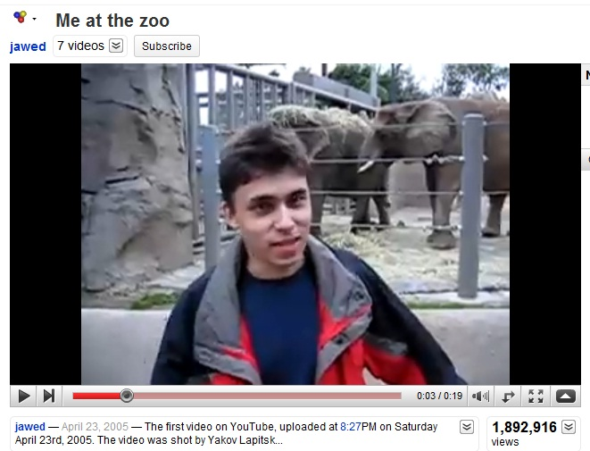

From Humble Beginnings
The layout of YouTube has come a long way since its humble beginnings in 2005.
On February 14, three PayPal employees- Chad Hurley, Steve Chen and Jawed Karim-
made history when they registered the domain name, and in April when the first video
“Me at the zoo.” was uploaded. Since then, the website has changed its layout eighteen times.
In the beginning, the site had many of the raw features still found today, but a very
unattractive and confusing presentation. While essential features such as “Related Videos”,
“Subscribe”, and “Comments” were present, the site was cluttered, blocky, and featured a grey
color palette. In November of 2006, when Google acquired YouTube, they adopted there signature
red logo and the site became more organized. The home page displayed “Featured Videos”, and a
tab system of navigation was displayed at the top. Later, in December, the layout of the video
links changed from a list style to a grid system, utilizing more of the page's real estate.
In July of 2009, the site began cleansing itself of the grey backdrops, instead giving the videos
a white background. In 2010, the site began getting rid of the blocky borders around links,
letting the links become pure text. In 2011, the site implemented the “Recommended for You” feature,
an essential component of the modern algorithm the site uses. The grid structure also became more dynamic,
allowing different types of categories to be displayed in a hierarchical fashion. In 2014, the final grid
system was established, with the vertical axis displaying categories and the horizontal axis displaying
videos within those categories.
In my next post, I will dive into the features and layout of the last two years.
Read More